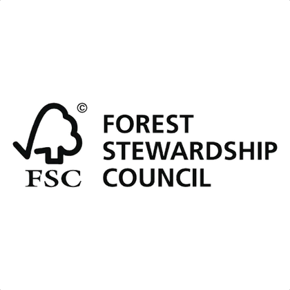

Temos uma longa história de qualidade na produção de embalagens — e um compromisso com um planeta onde o cuidado ambiental seja a maior prioridade.
Utilizamos apenas fibras renováveis de florestas plantadas, com o selo FSC — a certificação que garante manejo florestal responsável, do plantio à colheita.
Tem fibras renováveis, mas também tem tecnologia: cada copo é desenvolvido para preservar o calor e a integridade da bebida do primeiro ao último gole.
Um copo de papel Trompack se decompõe muito mais rápido que descartáveis convencionais.
Fibras de florestas plantadas e manejadas de forma responsável, com certificação reconhecida internacionalmente.
Matéria-prima 100% natural, pensada para reduzir o impacto ambiental em toda a cadeia produtiva.

Certificação FSC. O selo do Forest Stewardship Council atesta que a fibra do nosso papel vem de florestas de manejo responsável, com cadeia de custódia rastreada do plantio ao copo.